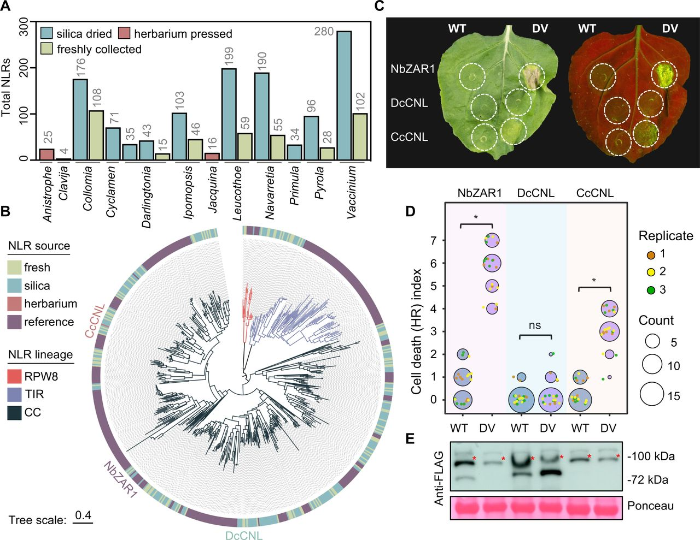
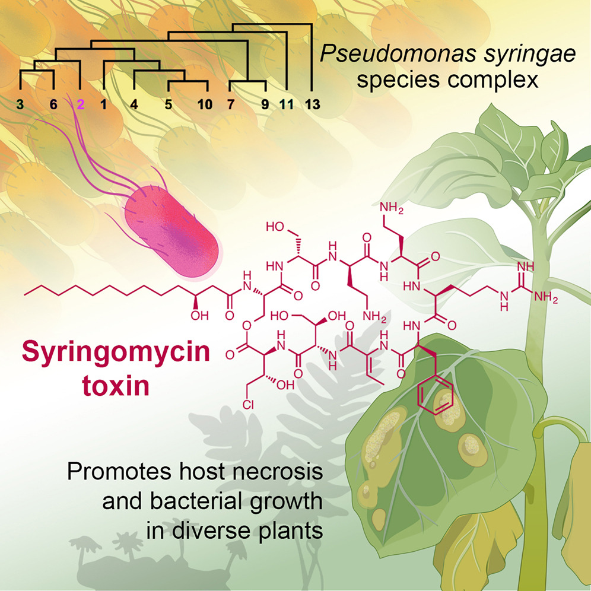
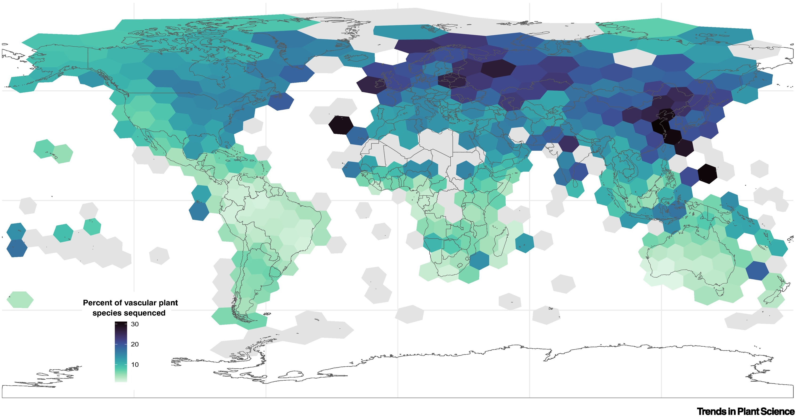
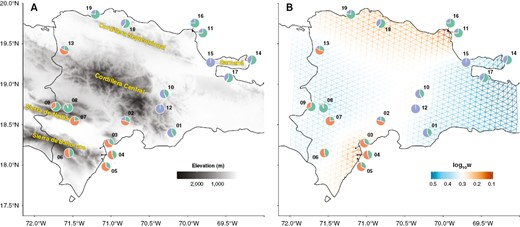
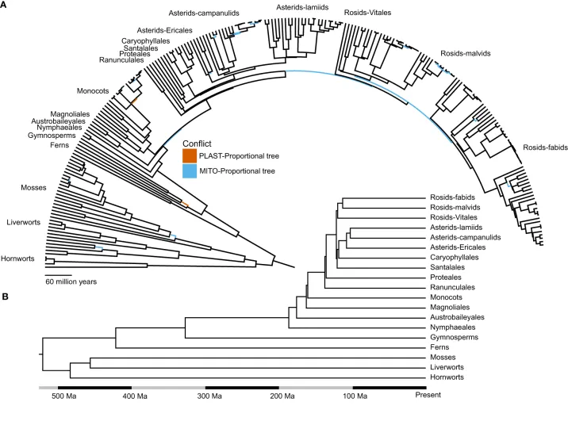
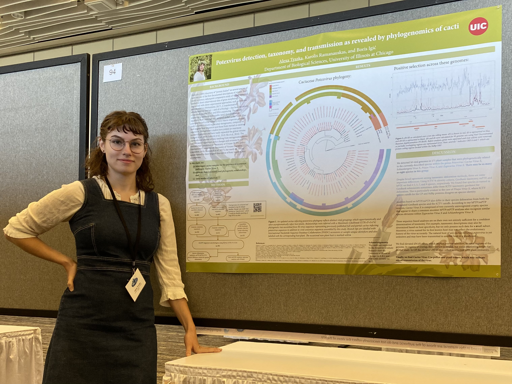

Herbaria provide a valuable resource for obtaining informative mRNA
Tyszka AS, Chia KS, Bretz EC, Mansour L, Larson DA,
Carella P, Walker JF.
bioRxiv preprint.
2025:2025-02.

Ph.D. Candidate, Ecology & Evolution
University of Illinois at Chicago
Walker Lab
Nice to meet you! I am broadly interested in plant evolution and phylogenetics, specifically within Caryophyllales and carnivorous plants across disparate families. In my work I attempt to optimize analyses of large-scale genetic data with tools in and python .

Tyszka AS, Chia KS, Bretz EC, Mansour L, Larson DA,
Carella P, Walker JF.
bioRxiv preprint.
2025:2025-02.

Grenz K, Chia KS, Turley EK, Tyszka AS, Atkinson RE,
Reeves J, Vickers M, Rejzek M, Walker JF, Carella P.
Cell Host & Microbe. 2025 Jan 8;33(1):20-9.

Tyszka AS, Larson DA, Walker JF.
Trends in Plant Science. 2024 Nov 29.

Ruiz-Vargas N, Ramanauskas K, Tyszka AS, Bretz EC,
Yeo MT, Mason-Gamer RJ, Walker JF.
Annals of Botany. 2024 Mar 1;133(3):459-72.

Tyszka AS, Bretz EC, Robertson HM, Woodcock-Girard
MD, Ramanauskas K, Larson DA, Stull GW and Walker JF
(2023)
Front. Plant Sci. 14:1125107.
titled Prospects for expanding the plant tree of life with historical RNA sequencing in Montreal. Interactive figures are available here.
Your browser doesn't support embedded PDFs. Download PDF
Find the poster here, along with interactive figures and source citations.Attended in Cleveland, Ohio, and presented a poster on Cactus Virus X.
